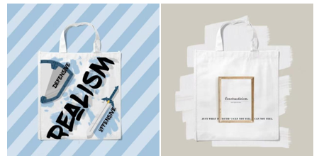

收录于合集

虎年伊始，万象更新
不会还有小伙伴不知道
国政学人的宣传部吧？
头条运营是我们
美编文创是我们
微博日更是我们
视频音频也是我们！
这是我宣传部目前打下的江山
但这些还远远不够
我们还需要更多小伙伴一起开疆扩土
事无巨细，人各迥异，我们等的就是你！
平台简介
国政学人是中国国际关系与政治学学界知名学术平台，专注相关领域的知识传播与学术研究事业。国政学人团队汇集了上百位来自海内外名校的青年学人。读者定位高水平研究者，影响受众已覆盖国内相关领域所有科研院所，并向国际拓展。 目前，国政学人以高质量外文编译为特色，并成长为中国国际关系学界规模与影响力最大的编译平台 。
目前，国政学人已形成集 微信公众号、微博、B站、喜马拉雅 为一体的新媒体矩阵，累计关注近 40万 人。此外，我们先后与知名学术出版社、媒体、智库建立了友好合作关系，为团队成员创造了无限的信息、资源和机遇。
招募详情
一、招募条件
**
**
1.熟悉微信公众平台运营，熟练掌握新媒体编辑工具（以掌握秀米图文排版编辑器为优先，目前没有掌握也不用担心，后期团队将会提供系统培训）；
2. 熟悉社交账号平台的运营，如：B站、微博等；
3. 擅长视频、音频制作剪辑，会使用PS、PR等图片和视频处理软件；
4. 擅长制图，会使用PS及其他制图软件；
5. 具有良好的声音条件，对配音感兴趣，有相关经验者优先；
6. 有一定的创新能力，可以参与策划宣传推广方案；
7. 有一定的宽松时间，能够接受宣传工作的定期排班与临时任务安排。
我们欢迎积极向上，热衷学习各位小伙伴，且不限制年级、专业。进入宣传部后可以选择两个或以上感兴趣的小分队，满足 两项及以上条件 的小伙伴们快来加入我们吧！
二、招募岗位
**
**
➢ 微信公众号编辑
1. 要求熟悉排版和后台操作，工作细心；
2. 主要负责国政学人公众号文章的排版和发布；
➢ 美术编辑
1. 主要负责制作推文封面图、讲座海报、节日海报等；
2. 要求熟练运用PS及其他制图软件；
➢ 微博运营
1. 要求有一定国政国关基础专业知识储备；
2. 具备良好的文案写作能力和对热点话题的敏锐度；
➢ B站投稿
1. 要求了解B站的运营以及当下热梗；
2. 要求有PS/视频剪辑/音频剪辑等技能；
➢ 喜马拉雅音频
1. 要求有一定国政国关基础专业知识储备；
2. 具有良好的声音条件，对配音工作感兴趣；
注： 您可以在报名表中写明对以上任一工作内容的偏好，以及是否能接受调剂，可以兼任多个岗位。
工作福利
（一）知识共享机制，国政学人学术交流体系
1、名家访谈（包括名家专访，学者巅峰对话等栏目）
【名家专访】国政学人专访吴心伯教授：“学者外交家”的政策关怀
【巅峰访谈】唐世平教授访谈阎学通教授：科学理论无国界，成不了“中国学派”
【巅峰访谈】唐世平教授专访秦亚青教授：从“实证主义者”到“建构主义者”

平台成员正在采访唐世平教授

国政学人记者与王逸舟教授合影
2、国政学人青年讲坛

3、团队成员“学习经验互助计划”
打造优秀同辈间交流平台，“保研”“申博”“海外留学”“跨学科学习”等专题朋辈交流会、一对一导师咨询、假期线上自习室等多形式内部交流活动，认识更多志同道合的小伙伴，分享个人学习与发展过程中的经验和收获、为团队成员的学业规划与升学就业提供指导和帮助。

（二）内部学习资料整理
国政学人平台定期将编译过程中遇到的知识点、专有名词及学术英语材料整理为集刊，在内部传阅。
（三）超多福利掉落
1. 合作出版社与赠书福利
国政学人与中国社会科学出版社、上海人民出版社东方编译所、商务印书馆等知名出版机构建立了合作关系，出版社会定期为团队提供专业最新书籍，团队成员将均有机会获得。此外，团队还为团队成员提供了购书报销奖励。
【赠书活动】你们入门国关必备的《国际政治学概论（第四版）》来了！
【赠书福利】国际关系前沿研究系列报告+著作新书推荐 | 第3期
【赠书福利】上海人民出版社 & 国政学人 新著推荐 | 第04期
2.周边文创
平台宣传部小伙伴原创设计的文创产品，有趣且美观，彰显你的“国政学人”身份！

3.实习机会
表现优秀者可获得实习证明（需在平台工作满半年），并有机会获得平台推荐资格，到知名单位进行联合实习。
更多福利等你来！
注：本平台为纯志愿性的公益组织，暂无法提供固定报酬，仅部分项目有津贴，请在报名前悉知。
招募流程
1、报名：请在国政学人公众号后台回复“报名”获取报名登记表，填写后将报名登记表、个人简历及个人新媒体作品（推送链接、海报、视频剪辑作品等均可）以压缩包形式发送至国政学人专属邮箱。
邮箱地址： guozhengxueren@163.com
报名截止日期：2022年2月15日晚22：00
2、入选：通过简历审核进行筛选。入选成功者我们将以邮件告知，并邀请你参与后续培训工作。
声明：招募解释权归国政学人官方平台所有。
文案&排版 | 邱意雯